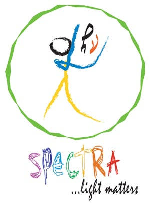

SPECTRA is the annual inter-collegiate science and technology fest organised by the students of Centre of Excellence in Lasers and Optoelectronic Sciences to celebrate the birth anniversary of nobel laureate Sir Chandrasekhar Venkata Raman on November 7.
This fest was started on a small scale in 2004 with just a physics quiz for the under-graduates.
The scale of the program was raised a little bit in 2005 when alongwith the physics quiz for under-graduates, there was a physics quiz for the school students too.
Maintaining the same trend of expansion,
SPECTRA 2006 came up with new events like colloquium for under-graduates alongwith the quizes for under-graduates and school students. An open house program was also organised for school students.